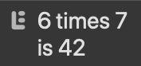

This lesson will go over comments, variables, strings, template literals, and math operators.
When you are developing code with a team of other people or even if you are working alone writing a sizable program, it is sometimes incredibly unclear what a specific part of code actually does, or why it does it in that way. Other people may have coding styles different from your own, and you may even forget what you meant certain parts of your own code to do over time. This is where comments come in.
// This is a single-line comment!
Comments are parts of code that are completely ignored when the code is run. As such, they can be used in the source code of projects to explain the reasoning behind the choices made in the code. You should get in the habit of writing comments in your code now, as they will be much more useful in the future with bigger projects.
Comments can be used to explain what code does and the reasoning behind why the developer decided to make certain choices.
Single-line comments start with two slashes. Functional code can be written prior to the slashes on the same line, but everything after them on that single line is seen as part of a comment.
Multi-line comments are useful for larger comments. They start with /* and end with
*/. Make sure to close each multi-line comment you open!
/*
This is a
multi-line
comment!
*/
Any program needs to store and manipulate values. A convenient way to do this in JS is through the use of variables. For example, let’s say we want to store the user’s name and then output it. Some code could look like this:
var name = "Bob";
console.log(name);
A quick syntax lesson: every statement in JS should end in a semicolon (;). This isn't actually necessary in JavaScript now, but I recommend doing it for clarity.
In this case, the variable is name. Every variable in JavaScript has to be declared
with a certain keyword. The keyword used in this example was var, but others may be
used in different situations. The single equals sign is the assignment operator. That operator
assigns the value of what is to the right of the operator to the variable on the left of the operator.
This is a lot of terminology, and we'll get into it more down the road, but basically, we have just created
a variable that stores the value "Bob". We can console.log the variable name, and
the output in the console should be the stored value, "Bob".
Note: variables are case sensitive. Be careful to use the proper casing every time you want to call a variable.
Before we get more into the details of variables, we can try manipulating strings as an example. Strings are a type of variable which are basically a string (hence the name) of characters. A simple string like the previous example works just fine, but what happens if you want a string with quotation marks in it?
For example, the string "This is a "string with quotes"!" would give you an error in an IDE
because it thinks that the string is closed at the second quotation mark.
One option is to replace the inner quotes with single quotes or the outer quotes with single quotes, because as long as the quotes are different types, no error will occur. Both these examples work:
var str1 = "This is a 'string with quotes'!";
var str2 = 'This is a "string with quotes"!';
Another option is using something called an escape character. The escape character is just a backslash \ but if you put it directly before a quotation mark, the IDE will allow you to put a quote in the string. For example this is a valid string:
var str1 = "This is a \"string with quotes\"!";
This would print out "This is a "string with quotes"!" in the console.
You can also escape single quotes in the same way like this: \' and insert actual backslashes
by escaping a backslash like this: \\.
Escape characters are very useful in formatting your strings as well. You can use \n for a new
line in your string and \t for a tab.
For example, the result in the console of the string "This is a\n\t\"string with quotes\"!"
looks like the image below. Notice the line break and the added spacing of the tab.
Try playing around with different combinations to get a hang of it! Remember: the best way to learn a programming language is by using it!
The name may seem daunting, but these things are basically just strings with backticks as the enclosing characters. These are a special kind of string which can be written over multiple lines and allow you to insert code directly into them using something called interpolation.
This is an example:
let num = 42;
let str = `6 times 7
is ${num}`;
console.log(str);
This is what results in the console:
The line break shows up and the variable num is shown as the value it stores.
Using the ${} interpolation syntax, any JS code can be run between those curly braces. For
example, replacing ${num} with ${6 * 7} would print the same result to the
console.
In the last example, you might have noticed that 6 * 7 resulted in the multiplication of 6 and
7. The asterisk character is used to denote multiplication in JS. Here is a list of the main math operators
in JavaScript:
| + | Addition |
| - | Subtraction |
| * | Multiplication |
| / | Division |
| % | Modulus |
| ** | Exponent |
You may not be familiar with the modulo operator. All it does is return the remainder of a division. For
example, 3 % 2 = 1 because the remainder of 3/2 is 1. One use for this operator is determining
if a number is divisible by another number because the result should be zero. For instance, you can tell if
a number is even if it modulo 2 is 0.
Try doing math with JavaScript to get used to the operators! Here is an example:
let total = 582;
let n = 6;
let average = total / n;
console.log(average);
The output to the console is 97, which is equal to 582/6.
Some expressions in JavaScript are so commonly used that in-built shortcuts for those expressions have been implemented. An example is an expression similar to this one:
let num = 2;
num = num + 3;
To increase the value stored in num by 3, you can reassign num to the current
value
of num increased by 3. This extremely common phrase has a shortcut that looks like this:
let num = 2;
num += 3;
These two blocks of code do the exact same thing, and the resulting new value of num is still
5. This kind of shortcut is extremely common, so keep them in mind. Here is a list of common shortcuts used
in a similar way:
| += | Sets a variable to the initial value of the variable plus the right-hand expression |
| -= | Sets a variable to the initial value of the variable minus the right-hand expression |
| *= | Sets a variable to the initial value of the variable multiplied by the right-hand expression |
| /= | Sets a variable to the initial value of the variable divided by the right-hand expression |
In addition, the need to increment or decrement the value of a number by one is so common that the phrases
+= 1 and -= 1 can be shortened even further:
num++; // This is equivalent to num += 1
num--; // This is equivalent to num -= 1
You can use one of these symbols to concatenate, or conjoin, strings. For example, the code:
console.log("Hello " + "there!");
Results in the output "Hello there!". Notice: the space character in the "Hello "
string is necessary because if it was not there, the resulting string would be "Hellothere".
The concatenation operator + joins strings directly without adding any spaces.
This section may seem like a lot of terminology, but don't worry about memorizing it right away. Working more with JS will allow you to quickly learn this information and build muscle memory.
There are multiple different types of information that variables can store. Here are some of the most common:
Number: one of the numerical data types in JavaScript, stores numbers, as you would expect.
For example: 1, 2.0, 1412321, 3.1415.
Boolean: can only store the values true and false.
String: stores a "string" of characters.
For example: "The quick brown fox jumps over the lazy dog".
Strings in JS are immutable, meaning they cannot be directly changed once created. A variable can be assigned to another string, but no methods (which we will talk about later) can change the string once assigned.
Strings are indicated by surrounding quotes, either double quotes "" or single quotes '' or even backticks ``. All three options have different effects on how you can organize your strings.
Variables can also be of type null, which only returns the value null. Variables
can also be of type undefined, which means that a variable has not been assigned a value yet.
For example, the statement let num; does not assign the variable num a value, so
its type is undefined.
The types listed so far are primitive values. Values of these types cannot be changed with methods/functions (which we will talk about later).
Variables that are not primitive types are known as Objects. These can be thought of as custom types of data created by the programmer! We'll talk about these later as well.